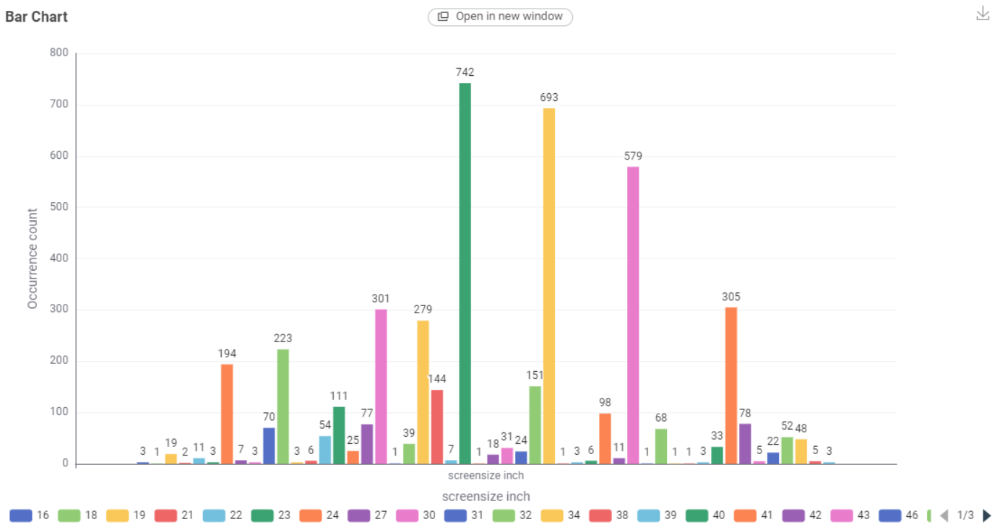
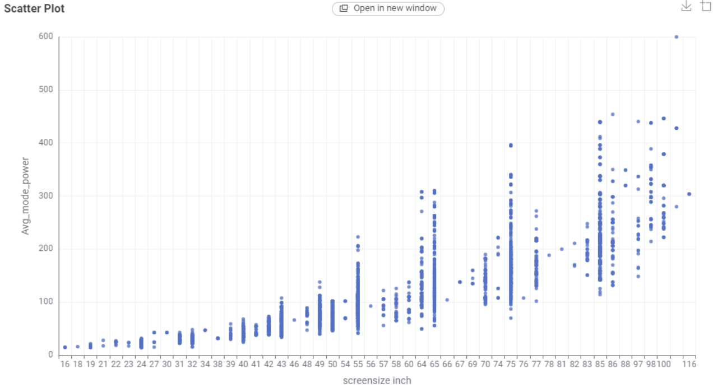
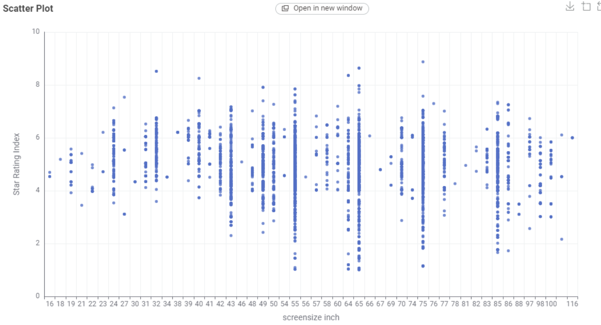

Television
What TV technologies are most common?
Answer: LCD(2173)
What screen sizes are most frequent?
Answer: screen size 55 inches
Which brands dominate the market?
Answer: LG
Which screen type uses the least power?
Answer: LCD
What is the relationship between screen size and power use?
The larger the screen size, the more power is consumed.
What is the relationship between star rating and screen size?
Bigger screen size always has higher rating